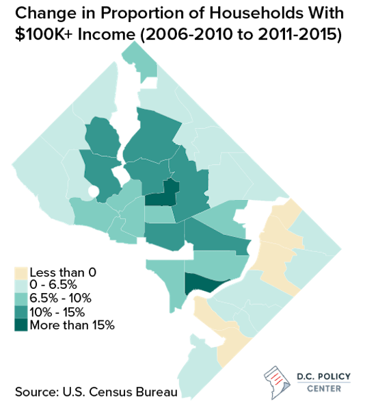
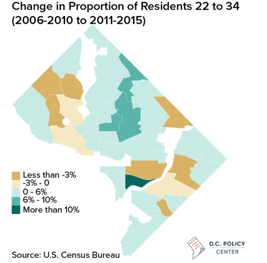

A Decade of Demographic Change
Kate Rabinowitz // March 2, 2017 // originally published by D.C. Policy Center
The Census Bureau recently announced that D.C.’s population has risen to a four-decade high of almost 700,000, a boom driven largely by an influx of new residents. These new District residents have undeniably changed the demographic makeup of D.C., which on the whole has become whiter, wealthier, and younger over the past decade.
However, these changes have not happened consistently across all parts of the District. We can see where these trends have been most pronounced when we look at data from individual neighborhoods “clusters” (group of neighborhoods that are frequently used for data analysis and planning purposes). The maps below show changes in race, wealth, and age by neighborhood cluster between two five-year spans, from 2006-2011 and from 2011-2015.

The most dramatic increases in the proportion of white residents have happened in central D.C., along with a large influx of white residents in the Navy Yard area and modest increases along the southeastern border.
And while D.C. overall is a whiter city today, the proportion of white residents actually fell in some neighborhoods, largely those located west of Rock Creek Park and east of the Anacostia River. The declines in the proportion of white residents are a part of different trends for each area. For instance, while neighborhoods in the upper Northwest constitute the whitest part of the city, they have become more diverse over the past decade—though many of those neighborhoods remain over 80 percent white. In some areas east of the Anacostia, the opposite holds true: Many of the neighborhoods with a declining proportion of white residents were less than 5 percent white to begin with.

During our 10-year study period, household incomes increased across the District, and the proportion of households making over $100,000 grew almost everywhere in the city. These changes were most pronounced in the center of the city—most notably Navy Yard and the neighborhood cluster that includes Shaw and Howard University—and in many northwestern neighborhoods bordering Rock Creek Park.
The only neighborhoods that experienced a decrease in the proportion of households earning over $100,000 were east of the Anacostia, such as areas around Kenilworth, Barry Farm, and Fort Dupont. These neighborhoods started with a small proportion of high income earners, and that proportion has continued to decline. The smallest gains also occurred either east of the Anacostia or west of Rock Creek Park. Meanwhile, the neighborhoods in upper Northwest that already had the highest proportion of households with income over $100,000 also grew little in the last decade.

As with changes by race and household income, the rise of younger residents ages 22 to 34 was not a consistent trend throughout the city. Many neighborhoods on either side of North Capitol Street, extending from the areas around Howard University and Eckington up through Fort Totten, saw increases of young people by around 6-10 percent.
Navy Yard saw the greatest increase in younger residents—more than 10 percent—even as the Capitol Hill area just to the north experienced a decrease of over 3 percent. Other neighborhoods that experienced a decline in the proportion of the 22- to 34-year-old age group were scattered west of Rock Creek Park, near American University, or farther east, in neighborhood clusters that include Fort Lincoln and Woodland, and around Fort Circle Park.
The image of a D.C. that has become wealthier, whiter, and younger over the past decade is true for some, but not all of the District. These trends were less apparent, and in some cases nonexistent, in certain areas east of the Anacostia and west of Rock Creek Park. And they have been largely true for central Northwest neighborhood clusters that include Shaw and Bloomingdale, areas frequently cited as examples of gentrification in D.C. in the past decade.
Yet no neighborhood has changed more dramatically on these measures than Navy Yard, which stood out in each map for having the most significant change. The Navy Yard neighborhood saw a 29% increase in the proportion of white residents, an 18% increase in the proportion of households earning over $100,000, and a 15% increase in the proportion of young residents ages 22-34. The area, which has seen significant development in recent years, will likely change further as more buildings are built and even more residents move in.
Technical notes: Data is available through the Census Bureau's American Community Survey. You can find complete code for this post on my github page.